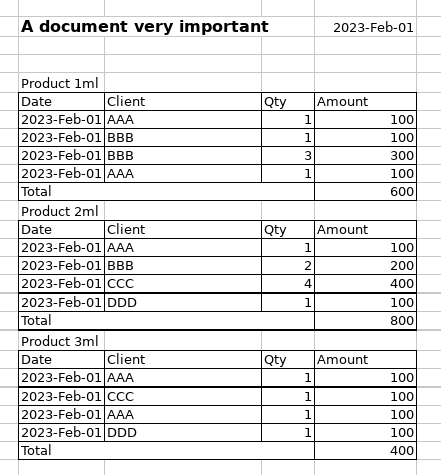

Tutorial 3 - Data extraction with defects
This tutoral is a continuation of the Tutorial 2.
This tutorial will demonstrate how to use Any2Json to extract data from one Excel spreadsheet with defects. To demonstrate the usage of this framework, we will load a document with a somewhat complex layout, as seen here:

Observe that there is hidden rows here and there. This kind of defect, mistakes or cosmetic artifacts, are very common and creates headaches when loading data. We will see that Any2Json automatically removes those artifacts (method called stiching) and determines if the data is part of a table or not.
Setup Any2Json
Import the packages and setup the main class:
package com.github.romualdrousseau.any2json.examples;
import java.util.EnumSet;
import java.util.List;
import com.github.romualdrousseau.any2json.Document;
import com.github.romualdrousseau.any2json.DocumentFactory;
import com.github.romualdrousseau.any2json.parser.LayexTableParser;
public class Tutorial3 implements Runnable {
public Tutorial3() {
}
@Override
public void run() {
// Code will come here
}
public static void main(final String[] args) {
new Tutorial3().run();
}
}
pom.xml
Any2Json has a very modular design where each functionality can be loaded separatly. We add the "any2json-layex-parser" module to enable the intelligent layout parsing. The following depedencies are required to run the code of this tutorial:
<!-- ShuJu Framework -->
<dependency>
<groupId>com.github.romualdrousseau</groupId>
<artifactId>shuju</artifactId>
<version>${shuju.version}</version>
</dependency>
<dependency>
<groupId>com.github.romualdrousseau</groupId>
<artifactId>shuju-jackson</artifactId>
<version>${shuju.version}</version>
</dependency>
<!-- Any2Json Framework -->
<dependency>
<groupId>com.github.romualdrousseau</groupId>
<artifactId>any2json</artifactId>
<version>${any2json.version}</version>
</dependency>
<dependency>
<groupId>com.github.romualdrousseau</groupId>
<artifactId>any2json-layex-parser</artifactId>
<version>${any2json.version}</version>
</dependency>
<dependency>
<groupId>com.github.romualdrousseau</groupId>
<artifactId>any2json-csv</artifactId>
<version>${any2json.version}</version>
</dependency>
<dependency>
<groupId>com.github.romualdrousseau</groupId>
<artifactId>any2json-excel</artifactId>
<version>${any2json.version}</version>
</dependency>
Load base model
To parse a document, any2Json needs a model that will contains the parameters required to the parsing. Instead to start from an empty Model (See Tutorial 10), we will start from an existing one and we will adapt it for our document. You can find a list and details of all models here.
The base model, we will use, is "sales-english" that has been trained on 200+ english documents containing distributor data and with a large range of different layouts.
The base model already recognize some entities such as DATE and NUMBER. We will setup the model to add one new entity PRODUCTNAME and we will configure a layex to extract the different elements of the documents. You can find more details about layex here.
final var model = Common.loadModelFromGitHub("sales-english");
// Add product name entity to the model
model.getEntityList().add("PRODUCTNAME");
model.getPatternMap().put("\\D+\\dml", "PRODUCTNAME");
model.update();
// Add a layex to the model
final var tableParser = new LayexTableParser(
List.of("(v.$)+"),
List.of("(()(S+$))(()([/^TOTAL/|v].+$)())+(/TOTAL/.+$)"));
model.registerTableParser(tableParser);
Load the document
We load the document by creating a document instance with the model. The hint "Document.Hint.INTELLI_LAYOUT" will tell the document instance that the document has a complex layout. The recipe "sheet.setCapillarityThreshold(0)" will tell the parser engine to extract the features as small as possible:
final var file = Common.loadData("document with defect.xlsx", this.getClass());
try (final var doc = DocumentFactory.createInstance(file, "UTF-8")
.setModel(model)
.setHints(EnumSet.of(Document.Hint.INTELLI_LAYOUT))
.setRecipe("sheet.setExtractionThreshold(0)")) {
...
}
Output the tabular result
Finally, we iterate over the sheets, rows and cells and output the data on the console:
doc.sheets().forEach(s -> Common.addSheetDebugger(s).getTable().ifPresent(t -> {
Common.printHeaders(t.headers());
Common.printRows(t.rows());
}));
2024-03-09 18:58:41 INFO Common:37 - Loaded resource: /models/sales-english.json
2024-03-09 18:58:41 INFO Common:37 - Loaded resource: /data/document with multiple tables.xlsx
2024-03-09 18:58:43 DEBUG Common:59 - Extracting features ...
2024-03-09 18:58:43 DEBUG Common:63 - Generating Layout Graph ...
2024-03-09 18:58:43 DEBUG Common:67 - Assembling Tabular Output ...
============================== DUMP GRAPH ===============================
Sheet1
|- A document very important DATE META(1, 1, 4, 1, 1, 1)
|- |- PRODUCTNAME META(1, 4, 1, 4, 1, 1)
|- |- |- Date Client Qty Amount DATA(1, 5, 4, 10, 6, 4) (1)
|- |- PRODUCTNAME META(1, 11, 1, 11, 1, 1)
|- |- |- Date Client Qty Amount DATA(1, 12, 4, 17, 6, 4) (2)
|- |- PRODUCTNAME META(1, 18, 1, 18, 1, 1)
|- |- |- Date Client Qty Amount DATA(1, 19, 4, 24, 6, 4) (3)
================================== END ==================================
2024-03-09 18:58:43 DEBUG Common:72 - Done.
A document very DATE PRODUCTNAME Client Qty Amount
A document very 2023-02-01 Product 1ml AAA 1 100
A document very 2023-02-01 Product 1ml BBB 1 100
A document very 2023-02-01 Product 1ml BBB 3 300
A document very 2023-02-01 Product 1ml AAA 1 100
A document very 2023-02-01 Product 2ml AAA 1 100
A document very 2023-02-01 Product 2ml BBB 2 200
A document very 2023-02-01 Product 2ml CCC 4 400
A document very 2023-02-01 Product 2ml DDD 1 100
A document very 2023-02-01 Product 3ml AAA 1 100
A document very 2023-02-01 Product 3ml CCC 1 100
A document very 2023-02-01 Product 3ml AAA 1 100
A document very 2023-02-01 Product 3ml DDD 1 100
On this output, we print out the graph of the document built during the parsing and we can see clearly the relation between the elements of the spreadsheet and how there are structured in tabular form. Observe also how the artifacts didn't change the result and we didn't even need to change the code.
Conclusion
Congratulations! You have loaded documents using Any2Json.
For more examples of using Any2Json, check out the tutorials.